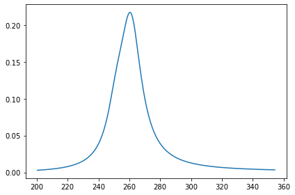

Solutions
Contents
Solutions#
Spectrum of 3-Hydroxyisonicotinaldehyde#
3-Hydroxyisonicotinaldehyde (HINA) has been studied for years as a simple analogue of vitamin B6, but was recently found to also be the smallest green-emissive fluorophore.
In this exercise, we will try to simulate its absorption and emission spectrum.
TD-HF#
import veloxchem as vlx
import gator
import adcc
import multipsi as mtp
import numpy as np
import matplotlib.pyplot as plt
au2ev = 27.211386
def lorentzian(x, y, xmin, xmax, xstep, gamma):
'''
Lorentzian broadening function
Call: xi,yi = lorentzian(energies, intensities, start energy, end energy, energy step, gamma)
'''
xi = np.arange(xmin,xmax,xstep); yi=np.zeros(len(xi))
for i in range(len(xi)):
for k in range(len(x)): yi[i] = yi[i] + y[k] * (gamma/2.) / ( (xi[i]-x[k])**2 + (gamma/2.)**2 )
return xi,yi
def gaussian(x, y, xmin, xmax, xstep, sigma):
'''
Gaussian broadening function
Call: xi,yi = gaussian(energies, intensities, start energy, end energy, energy step, gamma)
'''
xi = np.arange(xmin,xmax,xstep); yi=np.zeros(len(xi))
for i in range(len(xi)):
for k in range(len(y)): yi[i] = yi[i] + y[k]*np.e**(-((xi[i]-x[k])**2)/(2*sigma**2))
return xi,yi
benzoquinone_xyz = """
O -0.00630 0.84270 1.20330
C 1.08140 0.78490 1.76370
C 1.19750 0.37180 3.18690
C 2.33920 1.12460 1.04820
C 2.39020 0.30850 3.80120
C 3.53190 1.06130 1.66250
C 3.64810 0.64820 3.08570
O 4.73580 0.59050 3.64610
H 0.26440 0.12860 3.68740
H 2.22780 1.42340 0.00960
H 2.50170 0.00980 4.83990
H 4.46510 1.30460 1.16200
"""
molecule = vlx.Molecule.read_str(benzoquinone_xyz)
basis = vlx.MolecularBasis.read(molecule,'6-31G')
# Perform SCF calculation
scf_gs = vlx.ScfRestrictedDriver()
scf_gs.compute(molecule,basis)
* Info * Reading basis set from file: /opt/anaconda3/envs/echem_test/lib/python3.9/site-packages/veloxchem/basis/6-31G
Molecular Basis (Atomic Basis)
================================
Basis: 6-31G
Atom Contracted GTOs Primitive GTOs
O (3S,2P) (10S,4P)
H (2S) (4S)
C (3S,2P) (10S,4P)
Contracted Basis Functions : 80
Primitive Basis Functions : 192
Self Consistent Field Driver Setup
====================================
Wave Function Model : Spin-Restricted Hartree-Fock
Initial Guess Model : Superposition of Atomic Densities
Convergence Accelerator : Two Level Direct Inversion of Iterative Subspace
Max. Number of Iterations : 50
Max. Number of Error Vectors : 10
Convergence Threshold : 1.0e-06
ERI Screening Scheme : Cauchy Schwarz + Density
ERI Screening Mode : Dynamic
ERI Screening Threshold : 1.0e-12
Linear Dependence Threshold : 1.0e-06
* Info * Nuclear repulsion energy: 321.9459657921 a.u.
* Info * Overlap matrix computed in 0.00 sec.
* Info * Kinetic energy matrix computed in 0.00 sec.
* Info * Nuclear potential matrix computed in 0.00 sec.
* Info * Orthogonalization matrix computed in 0.00 sec.
* Info * SAD initial guess computed in 0.00 sec.
* Info * Starting Reduced Basis SCF calculation...
* Info * ...done. SCF energy in reduced basis set: -379.064969666642 a.u. Time: 0.69 sec.
* Info * Overlap matrix computed in 0.00 sec.
* Info * Kinetic energy matrix computed in 0.00 sec.
* Info * Nuclear potential matrix computed in 0.00 sec.
* Info * Orthogonalization matrix computed in 0.00 sec.
Iter. | Hartree-Fock Energy | Energy Change | Gradient Norm | Max. Gradient | Density Change
--------------------------------------------------------------------------------------------
1 -379.064986978007 0.0000000000 0.00091241 0.00017306 0.00000000
2 -379.064987320835 -0.0000003428 0.00080234 0.00009602 0.00095510
3 -379.064987428995 -0.0000001082 0.00035375 0.00003692 0.00114571
4 -379.064987441749 -0.0000000128 0.00005297 0.00000637 0.00014461
5 -379.064987442451 -0.0000000007 0.00001166 0.00000167 0.00005118
6 -379.064987442476 -0.0000000000 0.00000236 0.00000021 0.00000987
7 -379.064987442478 -0.0000000000 0.00000017 0.00000001 0.00000327
*** SCF converged in 7 iterations. Time: 1.03 sec.
Spin-Restricted Hartree-Fock:
-----------------------------
Total Energy : -379.0649874425 a.u.
Electronic Energy : -701.0109532346 a.u.
Nuclear Repulsion Energy : 321.9459657921 a.u.
------------------------------------
Gradient Norm : 0.0000001699 a.u.
Ground State Information
------------------------
Charge of Molecule : 0.0
Multiplicity (2S+1) : 1.0
Magnetic Quantum Number (M_S) : 0.0
Spin Restricted Orbitals
------------------------
Molecular Orbital No. 24:
--------------------------
Occupation: 2.000 Energy: -0.55475 a.u.
( 1 O 1p-1: 0.31) ( 1 O 2p-1: 0.22) ( 2 C 1p-1: 0.24)
( 2 C 2p-1: 0.16) ( 7 C 1p-1: -0.24) ( 7 C 2p-1: -0.16)
( 8 O 1p-1: -0.31) ( 8 O 2p-1: -0.22)
Molecular Orbital No. 25:
--------------------------
Occupation: 2.000 Energy: -0.46639 a.u.
( 1 O 1p+1: -0.19) ( 1 O 1p0 : 0.35) ( 1 O 2p0 : 0.26)
( 3 C 1p0 : 0.16) ( 4 C 1p+1: -0.18) ( 5 C 1p+1: -0.18)
( 6 C 1p0 : 0.16) ( 8 O 1p+1: -0.19) ( 8 O 1p0 : 0.35)
( 8 O 2p0 : 0.26)
Molecular Orbital No. 26:
--------------------------
Occupation: 2.000 Energy: -0.44036 a.u.
( 1 O 1p+1: -0.15) ( 1 O 1p0 : 0.29) ( 1 O 2p0 : 0.22)
( 2 C 1p0 : -0.16) ( 3 C 3s : -0.25) ( 3 C 1p0 : 0.17)
( 4 C 3s : 0.25) ( 4 C 2p0 : 0.20) ( 5 C 3s : 0.25)
( 5 C 2p0 : -0.20) ( 6 C 3s : -0.25) ( 6 C 1p0 : -0.17)
( 7 C 1p0 : 0.16) ( 8 O 1p+1: 0.15) ( 8 O 1p0 : -0.29)
( 8 O 2p0 : -0.22)
Molecular Orbital No. 27:
--------------------------
Occupation: 2.000 Energy: -0.41453 a.u.
( 3 C 1p-1: -0.27) ( 3 C 2p-1: -0.21) ( 4 C 1p-1: 0.27)
( 4 C 2p-1: 0.21) ( 5 C 1p-1: -0.27) ( 5 C 2p-1: -0.21)
( 6 C 1p-1: 0.27) ( 6 C 2p-1: 0.21)
Molecular Orbital No. 28:
--------------------------
Occupation: 2.000 Energy: -0.40704 a.u.
( 1 O 1p-1: -0.27) ( 1 O 2p-1: -0.22) ( 3 C 1p-1: 0.20)
( 3 C 2p-1: 0.17) ( 4 C 1p-1: 0.20) ( 4 C 2p-1: 0.17)
( 5 C 1p-1: 0.20) ( 5 C 2p-1: 0.17) ( 6 C 1p-1: 0.20)
( 6 C 2p-1: 0.17) ( 8 O 1p-1: -0.27) ( 8 O 2p-1: -0.22)
Molecular Orbital No. 29:
--------------------------
Occupation: 0.000 Energy: -0.00287 a.u.
( 1 O 1p-1: -0.25) ( 1 O 2p-1: -0.28) ( 2 C 1p-1: 0.20)
( 2 C 2p-1: 0.19) ( 3 C 1p-1: 0.17) ( 3 C 2p-1: 0.23)
( 4 C 1p-1: 0.17) ( 4 C 2p-1: 0.23) ( 5 C 1p-1: -0.17)
( 5 C 2p-1: -0.23) ( 6 C 1p-1: -0.17) ( 6 C 2p-1: -0.23)
( 7 C 1p-1: -0.20) ( 7 C 2p-1: -0.19) ( 8 O 1p-1: 0.25)
( 8 O 2p-1: 0.28)
Molecular Orbital No. 30:
--------------------------
Occupation: 0.000 Energy: 0.12384 a.u.
( 3 C 1p-1: 0.26) ( 3 C 2p-1: 0.50) ( 4 C 1p-1: -0.26)
( 4 C 2p-1: -0.50) ( 5 C 1p-1: -0.26) ( 5 C 2p-1: -0.50)
( 6 C 1p-1: 0.26) ( 6 C 2p-1: 0.50)
Molecular Orbital No. 31:
--------------------------
Occupation: 0.000 Energy: 0.17967 a.u.
( 1 O 1p-1: 0.24) ( 1 O 2p-1: 0.35) ( 2 C 1p-1: -0.34)
( 2 C 2p-1: -0.56) ( 2 C 2p0 : -0.17) ( 3 C 2p-1: 0.19)
( 4 C 2p-1: 0.19) ( 5 C 2p-1: 0.19) ( 6 C 2p-1: 0.19)
( 7 C 1p-1: -0.34) ( 7 C 2p-1: -0.56) ( 7 C 2p0 : -0.17)
( 8 O 1p-1: 0.24) ( 8 O 2p-1: 0.35)
Molecular Orbital No. 32:
--------------------------
Occupation: 0.000 Energy: 0.22682 a.u.
( 3 C 3s : 0.81) ( 3 C 2p+1: -0.46) ( 4 C 3s : 0.81)
( 4 C 2p+1: -0.18) ( 4 C 2p0 : -0.42) ( 5 C 3s : 0.81)
( 5 C 2p+1: 0.18) ( 5 C 2p0 : 0.42) ( 6 C 3s : 0.81)
( 6 C 2p+1: 0.46) ( 9 H 2s : -1.02) ( 10 H 2s : -1.02)
( 11 H 2s : -1.02) ( 12 H 2s : -1.02)
Molecular Orbital No. 33:
--------------------------
Occupation: 0.000 Energy: 0.25560 a.u.
( 3 C 3s : -0.79) ( 3 C 2p+1: 0.52) ( 3 C 2p0 : -0.22)
( 4 C 3s : 0.79) ( 4 C 1p0 : -0.17) ( 4 C 2p-1: 0.15)
( 4 C 2p0 : -0.55) ( 5 C 3s : -0.79) ( 5 C 1p0 : -0.17)
( 5 C 2p-1: 0.15) ( 5 C 2p0 : -0.55) ( 6 C 3s : 0.79)
( 6 C 2p+1: 0.52) ( 6 C 2p0 : -0.22) ( 9 H 2s : 1.12)
( 10 H 2s : -1.12) ( 11 H 2s : 1.12) ( 12 H 2s : -1.12)
{'S': array([[ 1.00000000e+00, 2.33689857e-01, 1.67279763e-01, ...,
-3.02878117e-05, -1.63978283e-38, -4.39059012e-12],
[ 2.33689857e-01, 1.00000000e+00, 7.63640810e-01, ...,
-4.96050691e-04, -2.82819890e-22, -2.26764130e-09],
[ 1.67279763e-01, 7.63640810e-01, 1.00000000e+00, ...,
-6.27905794e-03, -7.56161498e-10, -4.97752606e-06],
...,
[-3.02878117e-05, -4.96050691e-04, -6.27905794e-03, ...,
1.00000000e+00, -3.63911732e-02, 6.56484794e-02],
[-1.63978283e-38, -2.82819890e-22, -7.56161498e-10, ...,
-3.63911732e-02, 1.00000000e+00, 5.01520685e-01],
[-4.39059012e-12, -2.26764130e-09, -4.97752606e-06, ...,
6.56484794e-02, 5.01520685e-01, 1.00000000e+00]]),
'C_alpha': array([[-3.14114801e-01, 9.45075676e-01, 1.42954645e-04, ...,
1.79838344e-02, -1.00753281e-02, -1.84909554e-03],
[-7.52655423e-03, 2.22295025e-02, -4.99351696e-04, ...,
-5.33876677e-01, 1.42895537e+00, 1.37945697e+00],
[ 5.87612417e-03, -1.54300285e-02, 2.65747106e-03, ...,
4.56477896e-01, -4.09720979e+00, -4.41374989e+00],
...,
[ 9.49723374e-03, 1.88910132e-03, 8.41609582e-03, ...,
-3.48852687e+00, 3.03021412e+00, -5.05444626e+00],
[-1.97312421e-03, -6.48702703e-04, -2.21439146e-04, ...,
-2.00021650e-01, -8.84218636e-02, 5.12356061e-02],
[ 4.39972514e-03, 1.30824981e-03, 1.30109166e-03, ...,
6.26423943e-01, 1.12987195e+00, -1.04069766e+00]]),
'C_beta': array([[-3.14114801e-01, 9.45075676e-01, 1.42954645e-04, ...,
1.79838344e-02, -1.00753281e-02, -1.84909554e-03],
[-7.52655423e-03, 2.22295025e-02, -4.99351696e-04, ...,
-5.33876677e-01, 1.42895537e+00, 1.37945697e+00],
[ 5.87612417e-03, -1.54300285e-02, 2.65747106e-03, ...,
4.56477896e-01, -4.09720979e+00, -4.41374989e+00],
...,
[ 9.49723374e-03, 1.88910132e-03, 8.41609582e-03, ...,
-3.48852687e+00, 3.03021412e+00, -5.05444626e+00],
[-1.97312421e-03, -6.48702703e-04, -2.21439146e-04, ...,
-2.00021650e-01, -8.84218636e-02, 5.12356061e-02],
[ 4.39972514e-03, 1.30824981e-03, 1.30109166e-03, ...,
6.26423943e-01, 1.12987195e+00, -1.04069766e+00]]),
'E_alpha': array([-2.05978420e+01, -2.05978305e+01, -1.13788037e+01, -1.13787848e+01,
-1.12949848e+01, -1.12949489e+01, -1.12933946e+01, -1.12933814e+01,
-1.43588945e+00, -1.43375333e+00, -1.16928512e+00, -1.08495081e+00,
-9.71390958e-01, -8.80661241e-01, -8.35022634e-01, -7.25697896e-01,
-7.14453517e-01, -6.85326746e-01, -6.46860772e-01, -6.28468017e-01,
-6.02549229e-01, -6.00410977e-01, -5.89073171e-01, -5.54747354e-01,
-4.66385239e-01, -4.40357348e-01, -4.14534093e-01, -4.07035327e-01,
-2.86760903e-03, 1.23838132e-01, 1.79668478e-01, 2.26815017e-01,
2.55597892e-01, 2.82103408e-01, 3.17653136e-01, 3.31861404e-01,
3.37891680e-01, 3.95447224e-01, 4.30682473e-01, 4.48951003e-01,
5.27398066e-01, 5.36180886e-01, 6.67157699e-01, 6.74354436e-01,
6.89664250e-01, 7.01447591e-01, 7.27460061e-01, 7.66597798e-01,
7.85606071e-01, 8.00395121e-01, 8.40641947e-01, 8.57912838e-01,
8.70351801e-01, 9.25867628e-01, 9.34669921e-01, 9.42531460e-01,
9.60020627e-01, 1.04971014e+00, 1.06593204e+00, 1.10543286e+00,
1.11306088e+00, 1.11372442e+00, 1.19417409e+00, 1.21137788e+00,
1.21762447e+00, 1.23135574e+00, 1.25302558e+00, 1.28130852e+00,
1.30603993e+00, 1.31901090e+00, 1.35394523e+00, 1.39475754e+00,
1.39661249e+00, 1.49532854e+00, 1.51964632e+00, 1.54912361e+00,
1.68351385e+00, 1.99049188e+00, 2.17049382e+00, 2.31152605e+00]),
'E_beta': array([-2.05978420e+01, -2.05978305e+01, -1.13788037e+01, -1.13787848e+01,
-1.12949848e+01, -1.12949489e+01, -1.12933946e+01, -1.12933814e+01,
-1.43588945e+00, -1.43375333e+00, -1.16928512e+00, -1.08495081e+00,
-9.71390958e-01, -8.80661241e-01, -8.35022634e-01, -7.25697896e-01,
-7.14453517e-01, -6.85326746e-01, -6.46860772e-01, -6.28468017e-01,
-6.02549229e-01, -6.00410977e-01, -5.89073171e-01, -5.54747354e-01,
-4.66385239e-01, -4.40357348e-01, -4.14534093e-01, -4.07035327e-01,
-2.86760903e-03, 1.23838132e-01, 1.79668478e-01, 2.26815017e-01,
2.55597892e-01, 2.82103408e-01, 3.17653136e-01, 3.31861404e-01,
3.37891680e-01, 3.95447224e-01, 4.30682473e-01, 4.48951003e-01,
5.27398066e-01, 5.36180886e-01, 6.67157699e-01, 6.74354436e-01,
6.89664250e-01, 7.01447591e-01, 7.27460061e-01, 7.66597798e-01,
7.85606071e-01, 8.00395121e-01, 8.40641947e-01, 8.57912838e-01,
8.70351801e-01, 9.25867628e-01, 9.34669921e-01, 9.42531460e-01,
9.60020627e-01, 1.04971014e+00, 1.06593204e+00, 1.10543286e+00,
1.11306088e+00, 1.11372442e+00, 1.19417409e+00, 1.21137788e+00,
1.21762447e+00, 1.23135574e+00, 1.25302558e+00, 1.28130852e+00,
1.30603993e+00, 1.31901090e+00, 1.35394523e+00, 1.39475754e+00,
1.39661249e+00, 1.49532854e+00, 1.51964632e+00, 1.54912361e+00,
1.68351385e+00, 1.99049188e+00, 2.17049382e+00, 2.31152605e+00]),
'D_alpha': array([[ 1.04446537e+00, -9.28892093e-02, -1.55306378e-01, ...,
-1.11422874e-03, 1.76142668e-04, -2.86462510e-04],
[-9.28892093e-02, 2.57587732e-01, 3.07433014e-01, ...,
-5.64237015e-04, -1.48921542e-03, -3.63954754e-04],
[-1.55306378e-01, 3.07433014e-01, 3.77093045e-01, ...,
-1.03584243e-03, 4.88727605e-03, 2.63230027e-03],
...,
[-1.11422874e-03, -5.64237015e-04, -1.03584243e-03, ...,
2.81386971e-02, 5.05812450e-02, 2.82061259e-02],
[ 1.76142668e-04, -1.48921542e-03, 4.88727605e-03, ...,
5.05812450e-02, 3.21996491e-01, 1.90340636e-01],
[-2.86462510e-04, -3.63954754e-04, 2.63230027e-03, ...,
2.82061259e-02, 1.90340636e-01, 1.15005432e-01]]),
'D_beta': array([[ 1.04446537e+00, -9.28892093e-02, -1.55306378e-01, ...,
-1.11422874e-03, 1.76142668e-04, -2.86462510e-04],
[-9.28892093e-02, 2.57587732e-01, 3.07433014e-01, ...,
-5.64237015e-04, -1.48921542e-03, -3.63954754e-04],
[-1.55306378e-01, 3.07433014e-01, 3.77093045e-01, ...,
-1.03584243e-03, 4.88727605e-03, 2.63230027e-03],
...,
[-1.11422874e-03, -5.64237015e-04, -1.03584243e-03, ...,
2.81386971e-02, 5.05812450e-02, 2.82061259e-02],
[ 1.76142668e-04, -1.48921542e-03, 4.88727605e-03, ...,
5.05812450e-02, 3.21996491e-01, 1.90340636e-01],
[-2.86462510e-04, -3.63954754e-04, 2.63230027e-03, ...,
2.82061259e-02, 1.90340636e-01, 1.15005432e-01]]),
'F_alpha': array([[-2.05919084e+01, -5.13488808e+00, -3.64446970e+00, ...,
6.78373214e-04, -1.17776077e-06, -1.41927450e-06],
[-5.13488808e+00, -2.16687585e+00, -2.13447274e+00, ...,
2.01315793e-03, 5.26212245e-05, -6.36041172e-05],
[-3.64446970e+00, -2.13447274e+00, -1.73006768e+00, ...,
2.00037482e-02, -1.32685067e-06, 1.06751581e-05],
...,
[ 6.78373214e-04, 2.01315793e-03, 2.00037482e-02, ...,
-9.26980581e-01, 9.57438043e-02, -3.53072575e-02],
[-1.17776077e-06, 5.26212245e-05, -1.32685067e-06, ...,
9.57438043e-02, -2.20937491e-01, -7.40440948e-01],
[-1.41927450e-06, -6.36041172e-05, 1.06751581e-05, ...,
-3.53072575e-02, -7.40440948e-01, -4.56118185e-01]]),
'F_beta': array([[-2.05919084e+01, -5.13488808e+00, -3.64446970e+00, ...,
6.78373214e-04, -1.17776077e-06, -1.41927450e-06],
[-5.13488808e+00, -2.16687585e+00, -2.13447274e+00, ...,
2.01315793e-03, 5.26212245e-05, -6.36041172e-05],
[-3.64446970e+00, -2.13447274e+00, -1.73006768e+00, ...,
2.00037482e-02, -1.32685067e-06, 1.06751581e-05],
...,
[ 6.78373214e-04, 2.01315793e-03, 2.00037482e-02, ...,
-9.26980581e-01, 9.57438043e-02, -3.53072575e-02],
[-1.17776077e-06, 5.26212245e-05, -1.32685067e-06, ...,
9.57438043e-02, -2.20937491e-01, -7.40440948e-01],
[-1.41927450e-06, -6.36041172e-05, 1.06751581e-05, ...,
-3.53072575e-02, -7.40440948e-01, -4.56118185e-01]]),
'C': array([[-3.14114801e-01, 9.45075676e-01, 1.42954645e-04, ...,
1.79838344e-02, -1.00753281e-02, -1.84909554e-03],
[-7.52655423e-03, 2.22295025e-02, -4.99351696e-04, ...,
-5.33876677e-01, 1.42895537e+00, 1.37945697e+00],
[ 5.87612417e-03, -1.54300285e-02, 2.65747106e-03, ...,
4.56477896e-01, -4.09720979e+00, -4.41374989e+00],
...,
[ 9.49723374e-03, 1.88910132e-03, 8.41609582e-03, ...,
-3.48852687e+00, 3.03021412e+00, -5.05444626e+00],
[-1.97312421e-03, -6.48702703e-04, -2.21439146e-04, ...,
-2.00021650e-01, -8.84218636e-02, 5.12356061e-02],
[ 4.39972514e-03, 1.30824981e-03, 1.30109166e-03, ...,
6.26423943e-01, 1.12987195e+00, -1.04069766e+00]]),
'E': array([-2.05978420e+01, -2.05978305e+01, -1.13788037e+01, -1.13787848e+01,
-1.12949848e+01, -1.12949489e+01, -1.12933946e+01, -1.12933814e+01,
-1.43588945e+00, -1.43375333e+00, -1.16928512e+00, -1.08495081e+00,
-9.71390958e-01, -8.80661241e-01, -8.35022634e-01, -7.25697896e-01,
-7.14453517e-01, -6.85326746e-01, -6.46860772e-01, -6.28468017e-01,
-6.02549229e-01, -6.00410977e-01, -5.89073171e-01, -5.54747354e-01,
-4.66385239e-01, -4.40357348e-01, -4.14534093e-01, -4.07035327e-01,
-2.86760903e-03, 1.23838132e-01, 1.79668478e-01, 2.26815017e-01,
2.55597892e-01, 2.82103408e-01, 3.17653136e-01, 3.31861404e-01,
3.37891680e-01, 3.95447224e-01, 4.30682473e-01, 4.48951003e-01,
5.27398066e-01, 5.36180886e-01, 6.67157699e-01, 6.74354436e-01,
6.89664250e-01, 7.01447591e-01, 7.27460061e-01, 7.66597798e-01,
7.85606071e-01, 8.00395121e-01, 8.40641947e-01, 8.57912838e-01,
8.70351801e-01, 9.25867628e-01, 9.34669921e-01, 9.42531460e-01,
9.60020627e-01, 1.04971014e+00, 1.06593204e+00, 1.10543286e+00,
1.11306088e+00, 1.11372442e+00, 1.19417409e+00, 1.21137788e+00,
1.21762447e+00, 1.23135574e+00, 1.25302558e+00, 1.28130852e+00,
1.30603993e+00, 1.31901090e+00, 1.35394523e+00, 1.39475754e+00,
1.39661249e+00, 1.49532854e+00, 1.51964632e+00, 1.54912361e+00,
1.68351385e+00, 1.99049188e+00, 2.17049382e+00, 2.31152605e+00]),
'D': (array([[ 1.04446537e+00, -9.28892093e-02, -1.55306378e-01, ...,
-1.11422874e-03, 1.76142668e-04, -2.86462510e-04],
[-9.28892093e-02, 2.57587732e-01, 3.07433014e-01, ...,
-5.64237015e-04, -1.48921542e-03, -3.63954754e-04],
[-1.55306378e-01, 3.07433014e-01, 3.77093045e-01, ...,
-1.03584243e-03, 4.88727605e-03, 2.63230027e-03],
...,
[-1.11422874e-03, -5.64237015e-04, -1.03584243e-03, ...,
2.81386971e-02, 5.05812450e-02, 2.82061259e-02],
[ 1.76142668e-04, -1.48921542e-03, 4.88727605e-03, ...,
5.05812450e-02, 3.21996491e-01, 1.90340636e-01],
[-2.86462510e-04, -3.63954754e-04, 2.63230027e-03, ...,
2.82061259e-02, 1.90340636e-01, 1.15005432e-01]]),
array([[ 1.04446537e+00, -9.28892093e-02, -1.55306378e-01, ...,
-1.11422874e-03, 1.76142668e-04, -2.86462510e-04],
[-9.28892093e-02, 2.57587732e-01, 3.07433014e-01, ...,
-5.64237015e-04, -1.48921542e-03, -3.63954754e-04],
[-1.55306378e-01, 3.07433014e-01, 3.77093045e-01, ...,
-1.03584243e-03, 4.88727605e-03, 2.63230027e-03],
...,
[-1.11422874e-03, -5.64237015e-04, -1.03584243e-03, ...,
2.81386971e-02, 5.05812450e-02, 2.82061259e-02],
[ 1.76142668e-04, -1.48921542e-03, 4.88727605e-03, ...,
5.05812450e-02, 3.21996491e-01, 1.90340636e-01],
[-2.86462510e-04, -3.63954754e-04, 2.63230027e-03, ...,
2.82061259e-02, 1.90340636e-01, 1.15005432e-01]])),
'F': (array([[-2.05919084e+01, -5.13488808e+00, -3.64446970e+00, ...,
6.78373214e-04, -1.17776077e-06, -1.41927450e-06],
[-5.13488808e+00, -2.16687585e+00, -2.13447274e+00, ...,
2.01315793e-03, 5.26212245e-05, -6.36041172e-05],
[-3.64446970e+00, -2.13447274e+00, -1.73006768e+00, ...,
2.00037482e-02, -1.32685067e-06, 1.06751581e-05],
...,
[ 6.78373214e-04, 2.01315793e-03, 2.00037482e-02, ...,
-9.26980581e-01, 9.57438043e-02, -3.53072575e-02],
[-1.17776077e-06, 5.26212245e-05, -1.32685067e-06, ...,
9.57438043e-02, -2.20937491e-01, -7.40440948e-01],
[-1.41927450e-06, -6.36041172e-05, 1.06751581e-05, ...,
-3.53072575e-02, -7.40440948e-01, -4.56118185e-01]]),
array([[-2.05919084e+01, -5.13488808e+00, -3.64446970e+00, ...,
6.78373214e-04, -1.17776077e-06, -1.41927450e-06],
[-5.13488808e+00, -2.16687585e+00, -2.13447274e+00, ...,
2.01315793e-03, 5.26212245e-05, -6.36041172e-05],
[-3.64446970e+00, -2.13447274e+00, -1.73006768e+00, ...,
2.00037482e-02, -1.32685067e-06, 1.06751581e-05],
...,
[ 6.78373214e-04, 2.01315793e-03, 2.00037482e-02, ...,
-9.26980581e-01, 9.57438043e-02, -3.53072575e-02],
[-1.17776077e-06, 5.26212245e-05, -1.32685067e-06, ...,
9.57438043e-02, -2.20937491e-01, -7.40440948e-01],
[-1.41927450e-06, -6.36041172e-05, 1.06751581e-05, ...,
-3.53072575e-02, -7.40440948e-01, -4.56118185e-01]]))}
rpa_solver = vlx.LinearResponseEigenSolver()
rpa_solver.update_settings({'nstates':5}, {})
rpa_results = rpa_solver.compute(molecule, basis, scf_gs.scf_tensors)
Linear Response EigenSolver Setup
===================================
Number of States : 5
Max. Number of Iterations : 150
Convergence Threshold : 1.0e-04
ERI Screening Scheme : Cauchy Schwarz + Density
ERI Screening Threshold : 1.0e-15
* Info * Processing Fock builds... (batch size: 10)
* Info * batch 1/1
* Info * 5 gerade trial vectors in reduced space
* Info * 5 ungerade trial vectors in reduced space
* Info * 350.46 kB of memory used for subspace procedure on the master node
* Info * 1.68 GB of memory available for the solver on the master node
*** Iteration: 1 * Residuals (Max,Min): 4.98e-01 and 2.48e-01
Excitation 1 : 0.19031728 Residual Norm: 0.24771400
Excitation 2 : 0.21009040 Residual Norm: 0.32981781
Excitation 3 : 0.21126681 Residual Norm: 0.28378581
Excitation 4 : 0.26697084 Residual Norm: 0.49847762
Excitation 5 : 0.34127978 Residual Norm: 0.32042418
* Info * Processing Fock builds... (batch size: 10)
* Info * batch 1/1
* Info * 10 gerade trial vectors in reduced space
* Info * 10 ungerade trial vectors in reduced space
* Info * 583.42 kB of memory used for subspace procedure on the master node
* Info * 1.68 GB of memory available for the solver on the master node
*** Iteration: 2 * Residuals (Max,Min): 1.27e-01 and 7.28e-02
Excitation 1 : 0.14010257 Residual Norm: 0.09162340
Excitation 2 : 0.14405190 Residual Norm: 0.07913404
Excitation 3 : 0.19244594 Residual Norm: 0.07283334
Excitation 4 : 0.22876745 Residual Norm: 0.12698865
Excitation 5 : 0.32509871 Residual Norm: 0.07828751
* Info * Processing Fock builds... (batch size: 10)
* Info * batch 1/1
* Info * 15 gerade trial vectors in reduced space
* Info * 15 ungerade trial vectors in reduced space
* Info * 816.38 kB of memory used for subspace procedure on the master node
* Info * 1.68 GB of memory available for the solver on the master node
*** Iteration: 3 * Residuals (Max,Min): 7.13e-02 and 1.42e-02
Excitation 1 : 0.13347563 Residual Norm: 0.04294455
Excitation 2 : 0.14066175 Residual Norm: 0.02723427
Excitation 3 : 0.19045791 Residual Norm: 0.01415306
Excitation 4 : 0.22355874 Residual Norm: 0.07131375
Excitation 5 : 0.32235511 Residual Norm: 0.02104225
* Info * Processing Fock builds... (batch size: 10)
* Info * batch 1/1
* Info * 20 gerade trial vectors in reduced space
* Info * 20 ungerade trial vectors in reduced space
* Info * 1.05 MB of memory used for subspace procedure on the master node
* Info * 1.68 GB of memory available for the solver on the master node
*** Iteration: 4 * Residuals (Max,Min): 2.02e-01 and 2.57e-03
Excitation 1 : 0.13275128 Residual Norm: 0.01065551
Excitation 2 : 0.14034424 Residual Norm: 0.00730443
Excitation 3 : 0.19041872 Residual Norm: 0.00256754
Excitation 4 : 0.22249830 Residual Norm: 0.03573243
Excitation 5 : 0.30157530 Residual Norm: 0.20222199
* Info * Processing Fock builds... (batch size: 10)
* Info * batch 1/1
* Info * 25 gerade trial vectors in reduced space
* Info * 25 ungerade trial vectors in reduced space
* Info * 1.28 MB of memory used for subspace procedure on the master node
* Info * 1.68 GB of memory available for the solver on the master node
*** Iteration: 5 * Residuals (Max,Min): 3.91e-02 and 7.07e-04
Excitation 1 : 0.13272434 Residual Norm: 0.00231090
Excitation 2 : 0.14032934 Residual Norm: 0.00257485
Excitation 3 : 0.19041726 Residual Norm: 0.00070750
Excitation 4 : 0.22212429 Residual Norm: 0.01402891
Excitation 5 : 0.28943837 Residual Norm: 0.03914635
* Info * Processing Fock builds... (batch size: 10)
* Info * batch 1/1
* Info * 30 gerade trial vectors in reduced space
* Info * 30 ungerade trial vectors in reduced space
* Info * 1.52 MB of memory used for subspace procedure on the master node
* Info * 1.68 GB of memory available for the solver on the master node
*** Iteration: 6 * Residuals (Max,Min): 1.09e-02 and 2.77e-04
Excitation 1 : 0.13272354 Residual Norm: 0.00056642
Excitation 2 : 0.14032794 Residual Norm: 0.00074878
Excitation 3 : 0.19041721 Residual Norm: 0.00027746
Excitation 4 : 0.22208345 Residual Norm: 0.00457051
Excitation 5 : 0.28895836 Residual Norm: 0.01090558
* Info * Processing Fock builds... (batch size: 10)
* Info * batch 1/1
* Info * 35 gerade trial vectors in reduced space
* Info * 35 ungerade trial vectors in reduced space
* Info * 1.75 MB of memory used for subspace procedure on the master node
* Info * 1.68 GB of memory available for the solver on the master node
*** Iteration: 7 * Residuals (Max,Min): 4.12e-03 and 5.22e-05
Excitation 1 : 0.13272349 Residual Norm: 0.00012662
Excitation 2 : 0.14032787 Residual Norm: 0.00012805
Excitation 3 : 0.19041720 Residual Norm: 0.00005216 converged
Excitation 4 : 0.22207911 Residual Norm: 0.00092782
Excitation 5 : 0.28891356 Residual Norm: 0.00412179
* Info * Processing Fock builds... (batch size: 8)
* Info * batch 1/1
* Info * 39 gerade trial vectors in reduced space
* Info * 39 ungerade trial vectors in reduced space
* Info * 1.93 MB of memory used for subspace procedure on the master node
* Info * 1.68 GB of memory available for the solver on the master node
*** Iteration: 8 * Residuals (Max,Min): 1.07e-03 and 3.13e-05
Excitation 1 : 0.13272349 Residual Norm: 0.00003126 converged
Excitation 2 : 0.14032787 Residual Norm: 0.00004578 converged
Excitation 3 : 0.19041720 Residual Norm: 0.00003841 converged
Excitation 4 : 0.22207888 Residual Norm: 0.00037755
Excitation 5 : 0.28890922 Residual Norm: 0.00107125
* Info * Processing Fock builds... (batch size: 4)
* Info * batch 1/1
* Info * 41 gerade trial vectors in reduced space
* Info * 41 ungerade trial vectors in reduced space
* Info * 2.03 MB of memory used for subspace procedure on the master node
* Info * 1.68 GB of memory available for the solver on the master node
*** Iteration: 9 * Residuals (Max,Min): 3.32e-04 and 1.50e-05
Excitation 1 : 0.13272349 Residual Norm: 0.00001500 converged
Excitation 2 : 0.14032787 Residual Norm: 0.00004542 converged
Excitation 3 : 0.19041720 Residual Norm: 0.00003388 converged
Excitation 4 : 0.22207884 Residual Norm: 0.00014173
Excitation 5 : 0.28890900 Residual Norm: 0.00033206
* Info * Processing Fock builds... (batch size: 4)
* Info * batch 1/1
* Info * 43 gerade trial vectors in reduced space
* Info * 43 ungerade trial vectors in reduced space
* Info * 2.12 MB of memory used for subspace procedure on the master node
* Info * 1.68 GB of memory available for the solver on the master node
*** Iteration: 10 * Residuals (Max,Min): 9.47e-05 and 1.41e-05
Excitation 1 : 0.13272349 Residual Norm: 0.00001412 converged
Excitation 2 : 0.14032787 Residual Norm: 0.00004522 converged
Excitation 3 : 0.19041720 Residual Norm: 0.00003381 converged
Excitation 4 : 0.22207884 Residual Norm: 0.00002499 converged
Excitation 5 : 0.28890899 Residual Norm: 0.00009470 converged
*** Linear response converged in 10 iterations. Time: 2.91 sec
plt.figure(figsize=(6,4))
TDHF_E = au2ev*rpa_results['eigenvalues']
print(TDHF_E)
TDHF_f = rpa_results['oscillator_strengths']
print(TDHF_f)
xi,yi = lorentzian(TDHF_E,TDHF_f,3.5,9.2,0.01,0.3)
plt.plot(1240/xi,yi); plt.tight_layout(); plt.show()
[3.61159008 3.8185157 5.18151595 6.04307305 7.86161392]
[7.38515751e-12 9.21900999e-10 2.11166386e-09 8.74447226e-01
1.04145660e-10]
TD-DFT#
# SCF settings and calculation
scf_drv = vlx.ScfRestrictedDriver()
scf_settings = {'conv_thresh': 1.0e-6}
method_settings = {'xcfun': 'b3lyp'}
scf_drv.update_settings(scf_settings,method_settings)
scf_drv.compute(molecule, basis)
Self Consistent Field Driver Setup
====================================
Wave Function Model : Spin-Restricted Kohn-Sham
Initial Guess Model : Superposition of Atomic Densities
Convergence Accelerator : Two Level Direct Inversion of Iterative Subspace
Max. Number of Iterations : 50
Max. Number of Error Vectors : 10
Convergence Threshold : 1.0e-06
ERI Screening Scheme : Cauchy Schwarz + Density
ERI Screening Mode : Dynamic
ERI Screening Threshold : 1.0e-12
Linear Dependence Threshold : 1.0e-06
Exchange-Correlation Functional : B3LYP
Molecular Grid Level : 4
* Info * Nuclear repulsion energy: 321.9459657921 a.u.
* Info * Molecular grid with 160758 points generated in 0.02 sec.
* Info * Overlap matrix computed in 0.00 sec.
* Info * Kinetic energy matrix computed in 0.00 sec.
* Info * Nuclear potential matrix computed in 0.00 sec.
* Info * Orthogonalization matrix computed in 0.00 sec.
* Info * SAD initial guess computed in 0.00 sec.
* Info * Starting Reduced Basis SCF calculation...
* Info * ...done. SCF energy in reduced basis set: -379.064969666644 a.u. Time: 0.70 sec.
* Info * Overlap matrix computed in 0.00 sec.
* Info * Kinetic energy matrix computed in 0.00 sec.
* Info * Nuclear potential matrix computed in 0.00 sec.
* Info * Orthogonalization matrix computed in 0.00 sec.
Iter. | Kohn-Sham Energy | Energy Change | Gradient Norm | Max. Gradient | Density Change
--------------------------------------------------------------------------------------------
1 -381.327328237383 0.0000000000 0.30892227 0.03426429 0.00000000
2 -381.311638377671 0.0156898597 0.50593568 0.06016203 0.34606029
3 -381.339143682012 -0.0275053043 0.06842404 0.00639572 0.21946465
4 -381.339658580378 -0.0005148984 0.00400493 0.00037167 0.03125326
5 -381.339660560094 -0.0000019797 0.00210158 0.00016624 0.00467081
6 -381.339661158589 -0.0000005985 0.00043279 0.00003472 0.00098052
7 -381.339661181606 -0.0000000230 0.00005138 0.00000730 0.00016949
8 -381.339661180971 0.0000000006 0.00008956 0.00001327 0.00005610
9 -381.339661181949 -0.0000000010 0.00000259 0.00000030 0.00003543
10 -381.339661181949 -0.0000000000 0.00000251 0.00000031 0.00000185
11 -381.339661181950 -0.0000000000 0.00000016 0.00000002 0.00000089
*** SCF converged in 11 iterations. Time: 8.17 sec.
Spin-Restricted Kohn-Sham:
--------------------------
Total Energy : -381.3396611819 a.u.
Electronic Energy : -703.2856269741 a.u.
Nuclear Repulsion Energy : 321.9459657921 a.u.
------------------------------------
Gradient Norm : 0.0000001597 a.u.
Ground State Information
------------------------
Charge of Molecule : 0.0
Multiplicity (2S+1) : 1.0
Magnetic Quantum Number (M_S) : 0.0
Spin Restricted Orbitals
------------------------
Molecular Orbital No. 24:
--------------------------
Occupation: 2.000 Energy: -0.40954 a.u.
( 1 O 1p0 : -0.19) ( 2 C 1p0 : -0.20) ( 4 C 1p0 : 0.16)
( 5 C 1p0 : -0.16) ( 7 C 1p0 : 0.20) ( 8 O 1p0 : 0.19)
Molecular Orbital No. 25:
--------------------------
Occupation: 2.000 Energy: -0.30971 a.u.
( 3 C 1p-1: -0.29) ( 3 C 2p-1: -0.19) ( 4 C 1p-1: 0.29)
( 4 C 2p-1: 0.19) ( 5 C 1p-1: -0.29) ( 5 C 2p-1: -0.19)
( 6 C 1p-1: 0.29) ( 6 C 2p-1: 0.19)
Molecular Orbital No. 26:
--------------------------
Occupation: 2.000 Energy: -0.30900 a.u.
( 1 O 1p-1: 0.31) ( 1 O 2p-1: 0.22) ( 3 C 1p-1: -0.20)
( 4 C 1p-1: -0.20) ( 5 C 1p-1: -0.20) ( 6 C 1p-1: -0.20)
( 8 O 1p-1: 0.31) ( 8 O 2p-1: 0.22)
Molecular Orbital No. 27:
--------------------------
Occupation: 2.000 Energy: -0.28354 a.u.
( 1 O 1p+1: 0.20) ( 1 O 1p0 : -0.37) ( 1 O 2p0 : -0.25)
( 3 C 3s : 0.17) ( 4 C 3s : -0.17) ( 4 C 1p+1: 0.17)
( 5 C 3s : 0.17) ( 5 C 1p+1: 0.17) ( 6 C 3s : -0.17)
( 8 O 1p+1: 0.20) ( 8 O 1p0 : -0.37) ( 8 O 2p0 : -0.25)
Molecular Orbital No. 28:
--------------------------
Occupation: 2.000 Energy: -0.27339 a.u.
( 1 O 1p+1: 0.18) ( 1 O 1p0 : -0.33) ( 1 O 2p0 : -0.23)
( 3 C 3s : 0.33) ( 4 C 3s : -0.33) ( 5 C 3s : -0.33)
( 6 C 3s : 0.33) ( 8 O 1p+1: -0.18) ( 8 O 1p0 : 0.33)
( 8 O 2p0 : 0.23)
Molecular Orbital No. 29:
--------------------------
Occupation: 0.000 Energy: -0.13521 a.u.
( 1 O 1p-1: 0.30) ( 1 O 2p-1: 0.26) ( 2 C 1p-1: -0.22)
( 2 C 2p-1: -0.16) ( 3 C 1p-1: -0.18) ( 3 C 2p-1: -0.19)
( 4 C 1p-1: -0.18) ( 4 C 2p-1: -0.19) ( 5 C 1p-1: 0.18)
( 5 C 2p-1: 0.19) ( 6 C 1p-1: 0.18) ( 6 C 2p-1: 0.19)
( 7 C 1p-1: 0.22) ( 7 C 2p-1: 0.16) ( 8 O 1p-1: -0.30)
( 8 O 2p-1: -0.26)
Molecular Orbital No. 30:
--------------------------
Occupation: 0.000 Energy: -0.02872 a.u.
( 3 C 1p-1: -0.30) ( 3 C 2p-1: -0.43) ( 4 C 1p-1: 0.30)
( 4 C 2p-1: 0.43) ( 5 C 1p-1: 0.30) ( 5 C 2p-1: 0.43)
( 6 C 1p-1: -0.30) ( 6 C 2p-1: -0.43)
Molecular Orbital No. 31:
--------------------------
Occupation: 0.000 Energy: 0.00502 a.u.
( 1 O 1p-1: -0.26) ( 1 O 2p-1: -0.29) ( 2 C 1p-1: 0.39)
( 2 C 2p-1: 0.44) ( 3 C 2p-1: -0.17) ( 4 C 2p-1: -0.17)
( 5 C 2p-1: -0.17) ( 6 C 2p-1: -0.17) ( 7 C 1p-1: 0.39)
( 7 C 2p-1: 0.44) ( 8 O 1p-1: -0.26) ( 8 O 2p-1: -0.29)
Molecular Orbital No. 32:
--------------------------
Occupation: 0.000 Energy: 0.08904 a.u.
( 3 C 3s : -0.75) ( 3 C 2p+1: 0.40) ( 4 C 3s : -0.75)
( 4 C 2p+1: 0.16) ( 4 C 2p0 : 0.37) ( 5 C 3s : -0.75)
( 5 C 2p+1: -0.16) ( 5 C 2p0 : -0.37) ( 6 C 3s : -0.75)
( 6 C 2p+1: -0.40) ( 9 H 2s : 0.95) ( 10 H 2s : 0.95)
( 11 H 2s : 0.95) ( 12 H 2s : 0.95)
Molecular Orbital No. 33:
--------------------------
Occupation: 0.000 Energy: 0.11249 a.u.
( 3 C 3s : 0.65) ( 3 C 1p+1: -0.17) ( 3 C 2p+1: -0.44)
( 3 C 2p0 : 0.22) ( 4 C 3s : -0.65) ( 4 C 1p0 : 0.21)
( 4 C 2p0 : 0.48) ( 5 C 3s : 0.65) ( 5 C 1p0 : 0.21)
( 5 C 2p0 : 0.48) ( 6 C 3s : -0.65) ( 6 C 1p+1: -0.17)
( 6 C 2p+1: -0.44) ( 6 C 2p0 : 0.22) ( 9 H 2s : -1.02)
( 10 H 2s : 1.02) ( 11 H 2s : -1.02) ( 12 H 2s : 1.02)
{'S': array([[ 1.00000000e+00, 2.33689857e-01, 1.67279763e-01, ...,
-3.02878117e-05, -1.63978283e-38, -4.39059012e-12],
[ 2.33689857e-01, 1.00000000e+00, 7.63640810e-01, ...,
-4.96050691e-04, -2.82819890e-22, -2.26764130e-09],
[ 1.67279763e-01, 7.63640810e-01, 1.00000000e+00, ...,
-6.27905794e-03, -7.56161498e-10, -4.97752606e-06],
...,
[-3.02878117e-05, -4.96050691e-04, -6.27905794e-03, ...,
1.00000000e+00, -3.63911732e-02, 6.56484794e-02],
[-1.63978283e-38, -2.82819890e-22, -7.56161498e-10, ...,
-3.63911732e-02, 1.00000000e+00, 5.01520685e-01],
[-4.39059012e-12, -2.26764130e-09, -4.97752606e-06, ...,
6.56484794e-02, 5.01520685e-01, 1.00000000e+00]]),
'C_alpha': array([[ 5.33496231e-01, -8.40114652e-01, -2.32147853e-05, ...,
1.73277642e-02, -8.56954644e-03, -3.32387978e-04],
[ 1.65901540e-02, -2.57094298e-02, 7.66114544e-04, ...,
-6.25580462e-01, 1.41729630e+00, -1.33459086e+00],
[-1.56784037e-02, 2.23439533e-02, -6.07336283e-03, ...,
7.86722735e-01, -4.15683581e+00, 4.43158036e+00],
...,
[-1.49588657e-02, -6.82314486e-03, -1.56657266e-02, ...,
-3.16063890e+00, 3.14057670e+00, 5.39040823e+00],
[ 1.83004068e-03, 1.15182169e-03, -4.53010365e-04, ...,
-1.78825723e-01, -7.91473320e-02, -3.78308674e-02],
[-6.05154025e-03, -3.55633475e-03, -2.37555454e-03, ...,
6.95572805e-01, 1.14505518e+00, 1.01670052e+00]]),
'C_beta': array([[ 5.33496231e-01, -8.40114652e-01, -2.32147853e-05, ...,
1.73277642e-02, -8.56954644e-03, -3.32387978e-04],
[ 1.65901540e-02, -2.57094298e-02, 7.66114544e-04, ...,
-6.25580462e-01, 1.41729630e+00, -1.33459086e+00],
[-1.56784037e-02, 2.23439533e-02, -6.07336283e-03, ...,
7.86722735e-01, -4.15683581e+00, 4.43158036e+00],
...,
[-1.49588657e-02, -6.82314486e-03, -1.56657266e-02, ...,
-3.16063890e+00, 3.14057670e+00, 5.39040823e+00],
[ 1.83004068e-03, 1.15182169e-03, -4.53010365e-04, ...,
-1.78825723e-01, -7.91473320e-02, -3.78308674e-02],
[-6.05154025e-03, -3.55633475e-03, -2.37555454e-03, ...,
6.95572805e-01, 1.14505518e+00, 1.01670052e+00]]),
'E_alpha': array([-1.91696320e+01, -1.91696111e+01, -1.03051687e+01, -1.03051418e+01,
-1.02323430e+01, -1.02323217e+01, -1.02316124e+01, -1.02316060e+01,
-1.08738815e+00, -1.08584876e+00, -8.72080224e-01, -8.03475295e-01,
-7.15942153e-01, -6.51769826e-01, -6.14571851e-01, -5.27279192e-01,
-5.11790046e-01, -4.89430908e-01, -4.73617044e-01, -4.53523841e-01,
-4.40907398e-01, -4.23482144e-01, -4.19708768e-01, -4.09536749e-01,
-3.09713520e-01, -3.09003682e-01, -2.83537223e-01, -2.73386177e-01,
-1.35207448e-01, -2.87163999e-02, 5.02315541e-03, 8.90368022e-02,
1.12488198e-01, 1.25310112e-01, 1.41897120e-01, 1.71950792e-01,
1.73790844e-01, 2.34709093e-01, 2.69671441e-01, 2.73775226e-01,
3.38417945e-01, 3.45361493e-01, 4.54408823e-01, 4.62791775e-01,
4.71329745e-01, 5.17425731e-01, 5.23915164e-01, 5.44078223e-01,
5.61402993e-01, 5.71027714e-01, 6.28096050e-01, 6.31011966e-01,
6.31707279e-01, 6.64823964e-01, 6.67579893e-01, 6.93306729e-01,
7.29458730e-01, 7.97752873e-01, 8.26350222e-01, 8.39977518e-01,
8.43924219e-01, 8.67634607e-01, 9.28753304e-01, 9.52831536e-01,
9.70080518e-01, 9.70489140e-01, 9.78356653e-01, 1.00451222e+00,
1.01572478e+00, 1.07187874e+00, 1.08936136e+00, 1.12177651e+00,
1.14866344e+00, 1.25448223e+00, 1.27304143e+00, 1.29628524e+00,
1.43438114e+00, 1.73632100e+00, 1.88614656e+00, 2.03141037e+00]),
'E_beta': array([-1.91696320e+01, -1.91696111e+01, -1.03051687e+01, -1.03051418e+01,
-1.02323430e+01, -1.02323217e+01, -1.02316124e+01, -1.02316060e+01,
-1.08738815e+00, -1.08584876e+00, -8.72080224e-01, -8.03475295e-01,
-7.15942153e-01, -6.51769826e-01, -6.14571851e-01, -5.27279192e-01,
-5.11790046e-01, -4.89430908e-01, -4.73617044e-01, -4.53523841e-01,
-4.40907398e-01, -4.23482144e-01, -4.19708768e-01, -4.09536749e-01,
-3.09713520e-01, -3.09003682e-01, -2.83537223e-01, -2.73386177e-01,
-1.35207448e-01, -2.87163999e-02, 5.02315541e-03, 8.90368022e-02,
1.12488198e-01, 1.25310112e-01, 1.41897120e-01, 1.71950792e-01,
1.73790844e-01, 2.34709093e-01, 2.69671441e-01, 2.73775226e-01,
3.38417945e-01, 3.45361493e-01, 4.54408823e-01, 4.62791775e-01,
4.71329745e-01, 5.17425731e-01, 5.23915164e-01, 5.44078223e-01,
5.61402993e-01, 5.71027714e-01, 6.28096050e-01, 6.31011966e-01,
6.31707279e-01, 6.64823964e-01, 6.67579893e-01, 6.93306729e-01,
7.29458730e-01, 7.97752873e-01, 8.26350222e-01, 8.39977518e-01,
8.43924219e-01, 8.67634607e-01, 9.28753304e-01, 9.52831536e-01,
9.70080518e-01, 9.70489140e-01, 9.78356653e-01, 1.00451222e+00,
1.01572478e+00, 1.07187874e+00, 1.08936136e+00, 1.12177651e+00,
1.14866344e+00, 1.25448223e+00, 1.27304143e+00, 1.29628524e+00,
1.43438114e+00, 1.73632100e+00, 1.88614656e+00, 2.03141037e+00]),
'D_alpha': array([[ 1.04399765e+00, -8.77212904e-02, -1.64725605e-01, ...,
-6.02851880e-04, 2.63298472e-04, -2.01630881e-04],
[-8.77212904e-02, 2.61653664e-01, 3.02885954e-01, ...,
-3.83648167e-03, -1.87843676e-03, -7.18299360e-04],
[-1.64725605e-01, 3.02885954e-01, 3.69741534e-01, ...,
-9.64507129e-03, 5.51646131e-03, 1.06925341e-03],
...,
[-6.02851880e-04, -3.83648167e-03, -9.64507129e-03, ...,
3.40012971e-02, 7.65341402e-02, 4.24586524e-02],
[ 2.63298472e-04, -1.87843676e-03, 5.51646131e-03, ...,
7.65341402e-02, 3.30382946e-01, 1.80818462e-01],
[-2.01630881e-04, -7.18299360e-04, 1.06925341e-03, ...,
4.24586524e-02, 1.80818462e-01, 1.01553772e-01]]),
'D_beta': array([[ 1.04399765e+00, -8.77212904e-02, -1.64725605e-01, ...,
-6.02851880e-04, 2.63298472e-04, -2.01630881e-04],
[-8.77212904e-02, 2.61653664e-01, 3.02885954e-01, ...,
-3.83648167e-03, -1.87843676e-03, -7.18299360e-04],
[-1.64725605e-01, 3.02885954e-01, 3.69741534e-01, ...,
-9.64507129e-03, 5.51646131e-03, 1.06925341e-03],
...,
[-6.02851880e-04, -3.83648167e-03, -9.64507129e-03, ...,
3.40012971e-02, 7.65341402e-02, 4.24586524e-02],
[ 2.63298472e-04, -1.87843676e-03, 5.51646131e-03, ...,
7.65341402e-02, 3.30382946e-01, 1.80818462e-01],
[-2.01630881e-04, -7.18299360e-04, 1.06925341e-03, ...,
4.24586524e-02, 1.80818462e-01, 1.01553772e-01]]),
'F_alpha': array([[-1.91616196e+01, -4.83451072e+00, -3.40971857e+00, ...,
6.40261571e-04, -4.22336211e-07, -2.88845037e-07],
[-4.83451072e+00, -1.86534889e+00, -1.77146353e+00, ...,
2.04859745e-03, 1.46002816e-05, -1.66978314e-05],
[-3.40971857e+00, -1.77146353e+00, -1.40985381e+00, ...,
1.59166032e-02, 4.30961319e-06, 1.53135128e-05],
...,
[ 6.40261571e-04, 2.04859745e-03, 1.59166032e-02, ...,
-7.42481135e-01, 8.48076370e-02, -2.02892447e-02],
[-4.22336211e-07, 1.46002816e-05, 4.30961319e-06, ...,
8.48076370e-02, -1.65695626e-01, -5.36497629e-01],
[-2.88845037e-07, -1.66978314e-05, 1.53135128e-05, ...,
-2.02892447e-02, -5.36497629e-01, -3.42330344e-01]]),
'F_beta': array([[-1.91616196e+01, -4.83451072e+00, -3.40971857e+00, ...,
6.40261571e-04, -4.22336211e-07, -2.88845037e-07],
[-4.83451072e+00, -1.86534889e+00, -1.77146353e+00, ...,
2.04859745e-03, 1.46002816e-05, -1.66978314e-05],
[-3.40971857e+00, -1.77146353e+00, -1.40985381e+00, ...,
1.59166032e-02, 4.30961319e-06, 1.53135128e-05],
...,
[ 6.40261571e-04, 2.04859745e-03, 1.59166032e-02, ...,
-7.42481135e-01, 8.48076370e-02, -2.02892447e-02],
[-4.22336211e-07, 1.46002816e-05, 4.30961319e-06, ...,
8.48076370e-02, -1.65695626e-01, -5.36497629e-01],
[-2.88845037e-07, -1.66978314e-05, 1.53135128e-05, ...,
-2.02892447e-02, -5.36497629e-01, -3.42330344e-01]]),
'C': array([[ 5.33496231e-01, -8.40114652e-01, -2.32147853e-05, ...,
1.73277642e-02, -8.56954644e-03, -3.32387978e-04],
[ 1.65901540e-02, -2.57094298e-02, 7.66114544e-04, ...,
-6.25580462e-01, 1.41729630e+00, -1.33459086e+00],
[-1.56784037e-02, 2.23439533e-02, -6.07336283e-03, ...,
7.86722735e-01, -4.15683581e+00, 4.43158036e+00],
...,
[-1.49588657e-02, -6.82314486e-03, -1.56657266e-02, ...,
-3.16063890e+00, 3.14057670e+00, 5.39040823e+00],
[ 1.83004068e-03, 1.15182169e-03, -4.53010365e-04, ...,
-1.78825723e-01, -7.91473320e-02, -3.78308674e-02],
[-6.05154025e-03, -3.55633475e-03, -2.37555454e-03, ...,
6.95572805e-01, 1.14505518e+00, 1.01670052e+00]]),
'E': array([-1.91696320e+01, -1.91696111e+01, -1.03051687e+01, -1.03051418e+01,
-1.02323430e+01, -1.02323217e+01, -1.02316124e+01, -1.02316060e+01,
-1.08738815e+00, -1.08584876e+00, -8.72080224e-01, -8.03475295e-01,
-7.15942153e-01, -6.51769826e-01, -6.14571851e-01, -5.27279192e-01,
-5.11790046e-01, -4.89430908e-01, -4.73617044e-01, -4.53523841e-01,
-4.40907398e-01, -4.23482144e-01, -4.19708768e-01, -4.09536749e-01,
-3.09713520e-01, -3.09003682e-01, -2.83537223e-01, -2.73386177e-01,
-1.35207448e-01, -2.87163999e-02, 5.02315541e-03, 8.90368022e-02,
1.12488198e-01, 1.25310112e-01, 1.41897120e-01, 1.71950792e-01,
1.73790844e-01, 2.34709093e-01, 2.69671441e-01, 2.73775226e-01,
3.38417945e-01, 3.45361493e-01, 4.54408823e-01, 4.62791775e-01,
4.71329745e-01, 5.17425731e-01, 5.23915164e-01, 5.44078223e-01,
5.61402993e-01, 5.71027714e-01, 6.28096050e-01, 6.31011966e-01,
6.31707279e-01, 6.64823964e-01, 6.67579893e-01, 6.93306729e-01,
7.29458730e-01, 7.97752873e-01, 8.26350222e-01, 8.39977518e-01,
8.43924219e-01, 8.67634607e-01, 9.28753304e-01, 9.52831536e-01,
9.70080518e-01, 9.70489140e-01, 9.78356653e-01, 1.00451222e+00,
1.01572478e+00, 1.07187874e+00, 1.08936136e+00, 1.12177651e+00,
1.14866344e+00, 1.25448223e+00, 1.27304143e+00, 1.29628524e+00,
1.43438114e+00, 1.73632100e+00, 1.88614656e+00, 2.03141037e+00]),
'D': (array([[ 1.04399765e+00, -8.77212904e-02, -1.64725605e-01, ...,
-6.02851880e-04, 2.63298472e-04, -2.01630881e-04],
[-8.77212904e-02, 2.61653664e-01, 3.02885954e-01, ...,
-3.83648167e-03, -1.87843676e-03, -7.18299360e-04],
[-1.64725605e-01, 3.02885954e-01, 3.69741534e-01, ...,
-9.64507129e-03, 5.51646131e-03, 1.06925341e-03],
...,
[-6.02851880e-04, -3.83648167e-03, -9.64507129e-03, ...,
3.40012971e-02, 7.65341402e-02, 4.24586524e-02],
[ 2.63298472e-04, -1.87843676e-03, 5.51646131e-03, ...,
7.65341402e-02, 3.30382946e-01, 1.80818462e-01],
[-2.01630881e-04, -7.18299360e-04, 1.06925341e-03, ...,
4.24586524e-02, 1.80818462e-01, 1.01553772e-01]]),
array([[ 1.04399765e+00, -8.77212904e-02, -1.64725605e-01, ...,
-6.02851880e-04, 2.63298472e-04, -2.01630881e-04],
[-8.77212904e-02, 2.61653664e-01, 3.02885954e-01, ...,
-3.83648167e-03, -1.87843676e-03, -7.18299360e-04],
[-1.64725605e-01, 3.02885954e-01, 3.69741534e-01, ...,
-9.64507129e-03, 5.51646131e-03, 1.06925341e-03],
...,
[-6.02851880e-04, -3.83648167e-03, -9.64507129e-03, ...,
3.40012971e-02, 7.65341402e-02, 4.24586524e-02],
[ 2.63298472e-04, -1.87843676e-03, 5.51646131e-03, ...,
7.65341402e-02, 3.30382946e-01, 1.80818462e-01],
[-2.01630881e-04, -7.18299360e-04, 1.06925341e-03, ...,
4.24586524e-02, 1.80818462e-01, 1.01553772e-01]])),
'F': (array([[-1.91616196e+01, -4.83451072e+00, -3.40971857e+00, ...,
6.40261571e-04, -4.22336211e-07, -2.88845037e-07],
[-4.83451072e+00, -1.86534889e+00, -1.77146353e+00, ...,
2.04859745e-03, 1.46002816e-05, -1.66978314e-05],
[-3.40971857e+00, -1.77146353e+00, -1.40985381e+00, ...,
1.59166032e-02, 4.30961319e-06, 1.53135128e-05],
...,
[ 6.40261571e-04, 2.04859745e-03, 1.59166032e-02, ...,
-7.42481135e-01, 8.48076370e-02, -2.02892447e-02],
[-4.22336211e-07, 1.46002816e-05, 4.30961319e-06, ...,
8.48076370e-02, -1.65695626e-01, -5.36497629e-01],
[-2.88845037e-07, -1.66978314e-05, 1.53135128e-05, ...,
-2.02892447e-02, -5.36497629e-01, -3.42330344e-01]]),
array([[-1.91616196e+01, -4.83451072e+00, -3.40971857e+00, ...,
6.40261571e-04, -4.22336211e-07, -2.88845037e-07],
[-4.83451072e+00, -1.86534889e+00, -1.77146353e+00, ...,
2.04859745e-03, 1.46002816e-05, -1.66978314e-05],
[-3.40971857e+00, -1.77146353e+00, -1.40985381e+00, ...,
1.59166032e-02, 4.30961319e-06, 1.53135128e-05],
...,
[ 6.40261571e-04, 2.04859745e-03, 1.59166032e-02, ...,
-7.42481135e-01, 8.48076370e-02, -2.02892447e-02],
[-4.22336211e-07, 1.46002816e-05, 4.30961319e-06, ...,
8.48076370e-02, -1.65695626e-01, -5.36497629e-01],
[-2.88845037e-07, -1.66978314e-05, 1.53135128e-05, ...,
-2.02892447e-02, -5.36497629e-01, -3.42330344e-01]]))}
tddft_solver = vlx.TDAExciDriver()
tddft_solver.update_settings({'nstates':5}, {})
tddft_results = tddft_solver.compute(molecule, basis, scf_drv.scf_tensors)
TDA Driver Setup
==================
Number of States : 5
Max. Number of Iterations : 150
Convergence Threshold : 1.0e-04
ERI Screening Scheme : Cauchy Schwarz + Density
ERI Screening Threshold : 1.0e-15
*** Iteration: 1 * Reduced Space: 5 * Residues (Max,Min): 2.34e-01 and 6.57e-02
State 1: -0.12133250 a.u. Residual Norm: 0.12983679
State 2: -0.11687217 a.u. Residual Norm: 0.14000551
State 3: -0.02353445 a.u. Residual Norm: 0.11749396
State 4: 0.03543067 a.u. Residual Norm: 0.06569168
State 5: 0.07339093 a.u. Residual Norm: 0.23363848
*** Iteration: 2 * Reduced Space: 10 * Residues (Max,Min): 5.82e-02 and 2.99e-02
State 1: -0.19938710 a.u. Residual Norm: 0.04050305
State 2: -0.19680795 a.u. Residual Norm: 0.04883752
State 3: -0.03779491 a.u. Residual Norm: 0.02993995
State 4: 0.00907975 a.u. Residual Norm: 0.04565318
State 5: 0.01368408 a.u. Residual Norm: 0.05816238
*** Iteration: 3 * Reduced Space: 15 * Residues (Max,Min): 3.77e-02 and 1.27e-02
State 1: -0.20360680 a.u. Residual Norm: 0.01658228
State 2: -0.20327649 a.u. Residual Norm: 0.01268223
State 3: -0.04241950 a.u. Residual Norm: 0.01555301
State 4: 0.00439014 a.u. Residual Norm: 0.02520303
State 5: 0.00641680 a.u. Residual Norm: 0.03766289
*** Iteration: 4 * Reduced Space: 20 * Residues (Max,Min): 7.63e-02 and 3.09e-03
State 1: -0.20412948 a.u. Residual Norm: 0.00359980
State 2: -0.20361476 a.u. Residual Norm: 0.00309464
State 3: -0.04272737 a.u. Residual Norm: 0.00434235
State 4: -0.00641542 a.u. Residual Norm: 0.07632307
State 5: 0.00260904 a.u. Residual Norm: 0.03103199
*** Iteration: 5 * Reduced Space: 25 * Residues (Max,Min): 1.64e-01 and 9.71e-04
State 1: -0.20414375 a.u. Residual Norm: 0.00097126
State 2: -0.20362841 a.u. Residual Norm: 0.00105029
State 3: -0.04273667 a.u. Residual Norm: 0.00103016
State 4: -0.02329766 a.u. Residual Norm: 0.16445406
State 5: -0.01664322 a.u. Residual Norm: 0.02291700
*** Iteration: 6 * Reduced Space: 30 * Residues (Max,Min): 4.06e-02 and 1.81e-04
State 1: -0.20414414 a.u. Residual Norm: 0.00018097
State 2: -0.20362943 a.u. Residual Norm: 0.00033617
State 3: -0.04273706 a.u. Residual Norm: 0.00026294
State 4: -0.03813996 a.u. Residual Norm: 0.04055666
State 5: -0.01711954 a.u. Residual Norm: 0.00719426
*** Iteration: 7 * Reduced Space: 35 * Residues (Max,Min): 7.25e-03 and 3.88e-05
State 1: -0.20414416 a.u. Residual Norm: 0.00003882
State 2: -0.20362947 a.u. Residual Norm: 0.00004261
State 3: -0.04273711 a.u. Residual Norm: 0.00009442
State 4: -0.03886985 a.u. Residual Norm: 0.00725442
State 5: -0.01717027 a.u. Residual Norm: 0.00286123
*** Iteration: 8 * Reduced Space: 40 * Residues (Max,Min): 2.56e-03 and 6.93e-06
State 1: -0.20414416 a.u. Residual Norm: 0.00000960
State 2: -0.20362947 a.u. Residual Norm: 0.00000693
State 3: -0.04273712 a.u. Residual Norm: 0.00001465
State 4: -0.03890290 a.u. Residual Norm: 0.00256002
State 5: -0.01718027 a.u. Residual Norm: 0.00130422
*** Iteration: 9 * Reduced Space: 45 * Residues (Max,Min): 8.41e-04 and 1.13e-06
State 1: -0.20414416 a.u. Residual Norm: 0.00000148
State 2: -0.20362947 a.u. Residual Norm: 0.00000113
State 3: -0.04273712 a.u. Residual Norm: 0.00001135
State 4: -0.03890735 a.u. Residual Norm: 0.00084106
State 5: -0.01718162 a.u. Residual Norm: 0.00033405
*** Iteration: 10 * Reduced Space: 50 * Residues (Max,Min): 1.62e-01 and 2.22e-07
State 1: -0.20414416 a.u. Residual Norm: 0.00000029
State 2: -0.20362947 a.u. Residual Norm: 0.00000022
State 3: -0.04273712 a.u. Residual Norm: 0.00006366
State 4: -0.03890776 a.u. Residual Norm: 0.00032097
State 5: -0.03177022 a.u. Residual Norm: 0.16211545
*** Iteration: 11 * Reduced Space: 55 * Residues (Max,Min): 4.74e-02 and 3.66e-08
State 1: -0.20414416 a.u. Residual Norm: 0.00000004
State 2: -0.20362947 a.u. Residual Norm: 0.00000005
State 3: -0.04530658 a.u. Residual Norm: 0.04740681
State 4: -0.04273711 a.u. Residual Norm: 0.00007919
State 5: -0.03890775 a.u. Residual Norm: 0.00010796
*** Iteration: 12 * Reduced Space: 60 * Residues (Max,Min): 8.05e-03 and 4.61e-09
State 1: -0.20414416 a.u. Residual Norm: 0.00000000
State 2: -0.20362947 a.u. Residual Norm: 0.00000002
State 3: -0.04601216 a.u. Residual Norm: 0.00804905
State 4: -0.04273711 a.u. Residual Norm: 0.00001044
State 5: -0.03890775 a.u. Residual Norm: 0.00001839
*** Iteration: 13 * Reduced Space: 65 * Residues (Max,Min): 3.09e-03 and 1.50e-09
State 1: -0.20414416 a.u. Residual Norm: 0.00000000
State 2: -0.20362947 a.u. Residual Norm: 0.00000000
State 3: -0.04605931 a.u. Residual Norm: 0.00308916
State 4: -0.04273711 a.u. Residual Norm: 0.00000387
State 5: -0.03890775 a.u. Residual Norm: 0.00000756
*** Iteration: 14 * Reduced Space: 70 * Residues (Max,Min): 6.77e-04 and 3.07e-10
State 1: -0.20414416 a.u. Residual Norm: 0.00000000
State 2: -0.20362947 a.u. Residual Norm: 0.00000000
State 3: -0.04606342 a.u. Residual Norm: 0.00067701
State 4: -0.04273711 a.u. Residual Norm: 0.00000086
State 5: -0.03890775 a.u. Residual Norm: 0.00000171
*** Iteration: 15 * Reduced Space: 75 * Residues (Max,Min): 2.44e-04 and 6.27e-11
State 1: -0.20414416 a.u. Residual Norm: 0.00000000
State 2: -0.20362947 a.u. Residual Norm: 0.00000000
State 3: -0.04606378 a.u. Residual Norm: 0.00024359
State 4: -0.04273711 a.u. Residual Norm: 0.00000032
State 5: -0.03890775 a.u. Residual Norm: 0.00000059
*** Iteration: 16 * Reduced Space: 80 * Residues (Max,Min): 1.11e-04 and 1.05e-11
State 1: -0.20414416 a.u. Residual Norm: 0.00000000
State 2: -0.20362947 a.u. Residual Norm: 0.00000000
State 3: -0.04606385 a.u. Residual Norm: 0.00011104
State 4: -0.04273711 a.u. Residual Norm: 0.00000015
State 5: -0.03890775 a.u. Residual Norm: 0.00000021
*** Iteration: 17 * Reduced Space: 85 * Residues (Max,Min): 3.01e-05 and 9.89e-13
State 1: -0.20414416 a.u. Residual Norm: 0.00000000
State 2: -0.20362947 a.u. Residual Norm: 0.00000000
State 3: -0.04606385 a.u. Residual Norm: 0.00003013
State 4: -0.04273711 a.u. Residual Norm: 0.00000004
State 5: -0.03890775 a.u. Residual Norm: 0.00000007
*** 5 excited states converged in 17 iterations. Time: 3.69 sec
plt.figure(figsize=(6,4))
TDDFT_E = au2ev*tddft_results['eigenvalues']
print(1240/TDDFT_E)
TDDFT_f = tddft_results['oscillator_strengths']
print(TDDFT_f)
xi,yi = lorentzian(TDDFT_E,TDDFT_f,3.1,6.2,0.01,0.3)
plt.plot(1240/xi,yi); plt.tight_layout(); plt.show()
[ -223.22049441 -223.78469811 -989.260701 -1066.26673855
-1171.21037978]
[-5.81755347e-13 -1.65659816e-09 -1.09587995e-09 -9.85057685e-11
-2.75090540e-03]
MCSCF#
viewer = mtp.OrbitalViewer()
viewer.plot(molecule,basis,scf_gs.mol_orbs)
# We choose the pi orbitals + the C=O and N lone pair => indices 26 28 29 30 31 32 33 34 36 41
# We can skip the pointless OH lone pair (23) to reduce things a bit
space=mtp.OrbSpace(molecule,"hina-cas.h5")
mcscfdrv = mtp.McscfDriver()
mcscfdrv.compute(molecule,basis,space,4) # 1 ground state + 3 excited states
SI=mtp.InterState()
sa_mcscf_results = SI.diposc(molecule,basis,mcscfdrv.CIVecs)
---------------------------------------------------------------------------
ValueError Traceback (most recent call last)
Cell In [9], line 5
3 space=mtp.OrbSpace(molecule,"hina-cas.h5")
4 mcscfdrv = mtp.McscfDriver()
----> 5 mcscfdrv.compute(molecule,basis,space,4) # 1 ground state + 3 excited states
7 SI=mtp.InterState()
8 sa_mcscf_results = SI.diposc(molecule,basis,mcscfdrv.CIVecs)
File /opt/anaconda3/envs/echem_test/lib/python3.9/site-packages/multipsi/McscfDriver.py:136, in McscfDriver.compute(self, molecule, basis, molspace, nstates, weights)
134 self.S = None
135 self.S = self.comm.bcast(self.S, root=0)
--> 136 self.molspace.orthonormalize(self.S)
138 # Initialize the integrals
139 intdriver = Integrals(self.comm)
File /opt/anaconda3/envs/echem_test/lib/python3.9/site-packages/multipsi/OrbSpace.py:679, in OrbSpace.orthonormalize(self, S)
677 if self.rank == 0:
678 mo = inporb.alpha_to_numpy()
--> 679 newmo = self.gs_ortho(mo,S)
680 ene = inporb.ea_to_numpy()
681 occ = inporb.occa_to_numpy()
File /opt/anaconda3/envs/echem_test/lib/python3.9/site-packages/multipsi/OrbSpace.py:693, in OrbSpace.gs_ortho(self, mo, S)
689 """
690 Orthonormalize the starting basis using Gram-Schmidt orthonormalization
691 """
692 moT = np.transpose(mo)
--> 693 Spq = np.matmul(np.matmul(moT, S), mo)
695 N = Spq.shape[0]
696 Orth = np.zeros((N, N))
ValueError: matmul: Input operand 1 has a mismatch in its core dimension 0, with gufunc signature (n?,k),(k,m?)->(n?,m?) (size 80 is different from 91)
plt.figure(figsize=(6,4))
MCSCF_E = au2ev*sa_mcscf_results['energies']
MCSCF_f = sa_mcscf_results['oscillator_strengths']
xi,yi = lorentzian(MCSCF_E,MCSCF_f,3.5,6.2,0.01,0.3)
plt.plot(1240/xi,yi); plt.tight_layout(); plt.show()
